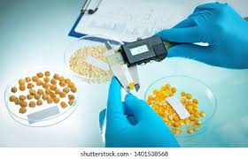
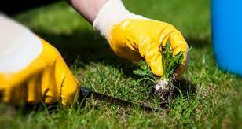
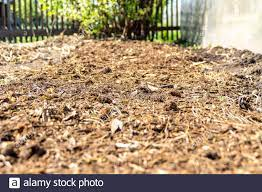
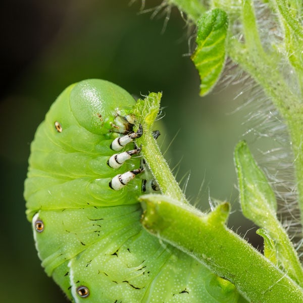
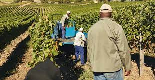

Seed testing for germination, varietal purity, disease screening.
Saving your own seeds is a cost-effective way to access crop seed for future planting and to help maintain the planet's plant biodiversity. Whether you plant your own saved seeds, give them away to friends and neighbors, or distribute them through your organization, knowing the viability of your seeds is important. As a follow-up to the article in the January 2011 EC HO Asia Notes, Issue 8, titled "Building your own seed germination chamber for testing seed viability" ( www.echonet.org/repository#1003:d:Build Your Own Seed Germination Cabinet), this article will explore the details of several low-cost methods for testing seed viability. Seed viability is a measure of the percentage of seeds that are alive after storage. The greater the viability of your seeds, the fewer seeds will be needed to establish a desired number of plants in the field or nursery. Seed viability can be tested in many easy ways. A seed germination test is probably the most simple: seeds are given the needed resources (air, water, warmth, and light) to germinate and grow into a seedling. Simply place seeds in the soil or in a pot of soil and see how many grow. However, one disadvantage of using soil, pots, and outdoor resources is environmental fluctuation that can cast doubt on the true viability of the seeds (did the seeds fail to germinate because they were dead, or because they were watered erratically, fell victim to fungal attack, got too hot, etc.?).
Weed control measures.
Our organization is offering Weed Management Services to our clients. We are proficient to offer this service in the best probable way with the help of our experts. Clients can avail this servicefrom us as per their requirements. We finish client’s service in particular time frame at low prices. Checking on farm soil fertility. Termite Control Services, Mosquito Control Services, Cockroaches Control Services, General Household Services, Bees Control Services, Pre Construction Termite Control Services, Disinfestation Services, Carpet Beetles Control Services, Silver Fish Control Services, Fleas Control Services, Spider Control Services, Fumigation Treatment Services, Herbal Treatment Services, Natural Pest Control Services, Weed Management Services, Rodent Control Services, Carpet Cleaning Services, Carpet Treatment Services, Wood Borer Services, Garden Treatment Services, Moths Pest Control Services.
Checking on farm soil fertility.
Monitor and analyse soil fertility real-time, fast and affordable. Manage soil fertility during growing season and in the field, even in remote areas. Have always access to your data via your portal. Start precision farming with our cloud based tools for instant monitoring and analyzing nutrients in soil, feed and leaves or scouting insects. Applications are key to our services. In combination with our in-house developed tools, our apps provide you with on-the-spot, fast, integrable and reliable data and customizable farm management recommendations.
Giving information on various agricultural practices.

Soil fSelecting soil analysis servicesertility and composting services: Assists farmers to address soil fertility issues to increase crop quality and yield. Land management services: Helps optimize AG land usage by improving tilling, draining, excavating, clearing, rotating, fertilizing, irrigation, and harvesting techniques. Veterinary services: Provides medical attention for AG animals, such as working animals and livestock. This includes emergency care, diagnostics, treatment, and hospitalization. Common procedures include reproductive care, ultrasounds, x-rays, vaccinations, and milk services. Fencing: Companies erect fences or barriers to establish perimeters and retain animals. Biocide services: Apply or supply herbicides and pesticides to farmlands; this includes cropdusting services. Biotechnology: Companies provide genetically-modified organisms, develop vaccines, provide bioanalytic services, and clone crops. Grooming services: Maintain animal appearances via bathing, shearing, and trimming processes.
Plants and animals pest and disease control measures.
General Disease Prevention and Control Measures Prevention of Environmental contamination Control of Intermediate host, vectors and reservoirs Control of internal parasites Control of arthropod pests Control and reducing the infection as soon as an outbreak occurs Isolation of sick animals Quarantine for newly purchased animals Vaccination of farm animals Deworming of animals Elimination of carriers Tuberculin test Johnin test Agglutination test for brucellosis Test for mastitis-Strip Cup Test Test for mastitis- California Mastitis Test (CMT) Disposal of carcass Burial of carcass Burning of carcass Disinfection of animal houses Disinfection of pastures Common disinfectants and their usage General Disease Prevention Measures
Farm management practices eg prunning, spraying, weeding e.t.c
Tillage practices: tillage is the manipulation of soil that promotes good germination of seeds and crop growth. Practices occur prior to planting (ploughing) but also during crop growth (weeding). The farmer’s strategy adopted for tillage in the field should be known. Dates and frequency of weeding: the data collection protocol should record this information for each field. It can be beneficial in satellite image interpretation, as it will flag whether a field is or is not weedy. This may explain differences in spectral response between fields with the same crop and cropping calendar. Nutrient management: this captures whether fertilizers (organic or inorganic) are applied, the quantity and the rate (periods) of application. Differences between fields may affect plant vigor and hence (again) may explain differences in spectral response. Agricultural water management: information on the water management strategy adopted for each FMU should be collected.